Amendment #114 (S.O. 203(E), 1976)
22 changes: 2 to the First Schedule, 20 to the Second Schedule. 20 applied2 not applied
What it did to the ministries
- spun offDepartment of Revenue and Banking is separated from Ministry of Finance (22 subjects) change 1, 2, 6, 7, 8, 9 · histories: Finance, Revenue and Banking
- shrankMinistry of Supply and Rehabilitation shrinks from 29 to 7 subjects change 22 · histories: Supply
The order, page by page
Page 1 of 16
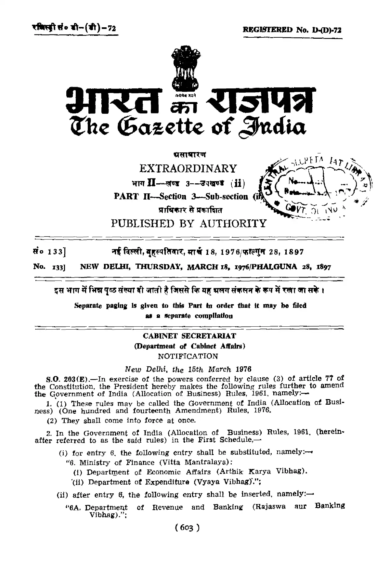
12Schedule 1 › entry 6
- 6. Ministry of Finance
- i. Department of Economic Affairs
- ii. Department of Expenditure
applied at schedule 1 › ministry 6 in the Rules after #114
after Schedule 1 › entry 6
- 6A. Department of Revenue and Banking
applied at schedule 1 › department 6A in the Rules after #114
Page 2 of 16
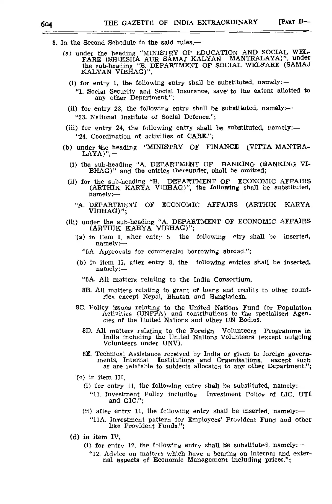
3456789101112Schedule 2 › MINISTRY OF EDUCATION AND SOCIAL WELFARE › DEPARTMENT OF SOCIAL WELFARE › entry 1
- 1. Social Security and Social Insurance, save to the extent allotted to any other Department.
applied at schedule 2 › ministry MINISTRY OF EDUCATION AND SOCIAL WELFARE › department B › entry 1 in the Rules after #114
Schedule 2 › MINISTRY OF EDUCATION AND SOCIAL WELFARE › DEPARTMENT OF SOCIAL WELFARE › entry 23
- 23. National Institute of Social Defence.
applied at schedule 2 › ministry MINISTRY OF EDUCATION AND SOCIAL WELFARE › department B › part IV › entry 23 in the Rules after #114
Schedule 2 › MINISTRY OF EDUCATION AND SOCIAL WELFARE › DEPARTMENT OF SOCIAL WELFARE › entry 24
- 24. Coordination of activities of CARE.
applied at schedule 2 › ministry MINISTRY OF EDUCATION AND SOCIAL WELFARE › department B › part IV › entry 24 in the Rules after #114
Schedule 2 › MINISTRY OF FINANCE › DEPARTMENT OF BANKING
applied at schedule 2 › ministry MINISTRY OF FINANCE › department A in the Rules after #114
Schedule 2 › MINISTRY OF FINANCE › DEPARTMENT OF ECONOMIC AFFAIRS
- A. DEPARTMENT OF ECONOMIC AFFAIRS
applied at schedule 2 › ministry MINISTRY OF FINANCE › department A in the Rules after #114
after Schedule 2 › MINISTRY OF FINANCE › DEPARTMENT OF ECONOMIC AFFAIRS › I › entry 5
- 5A. Approvals for commercial borrowing abroad.
applied at schedule 2 › ministry MINISTRY OF FINANCE › department A › group_heading I › entry 5A in the Rules after #114
after Schedule 2 › MINISTRY OF FINANCE › DEPARTMENT OF ECONOMIC AFFAIRS › II › entry 8
- 8A. All matters relating to the India Consortium.
- 8B. All matters relating to grant of loans and credits to other countries except Nepal, Bhutan and Bangladesh.
- 8C. Policy issues relating to the United Nations Fund for Population Activities (UNFPA) and contributions to the specialised Agencies of the United Nations and other UN Bodies.
- 8D. All matters relating to the Foreign Volunteers Programme in India including the United Nations Volunteers (except outgoing Volunteers under UNV).
- 8E. Technical Assistance received by India or given to foreign governments, Internal Institutions and Organisations, except such as are relatable to subjects allocated to any other Department.
applied at schedule 2 › ministry MINISTRY OF FINANCE › department A › group_heading II › entry 8A in the Rules after #114
Schedule 2 › MINISTRY OF FINANCE › DEPARTMENT OF ECONOMIC AFFAIRS › III › entry 11
- 11. Investment Policy including Investment Policy of LIC, UTI and GIC.
applied at schedule 2 › ministry MINISTRY OF FINANCE › department A › group_heading III › entry 11 in the Rules after #114
after Schedule 2 › MINISTRY OF FINANCE › DEPARTMENT OF ECONOMIC AFFAIRS › III › entry 11
- 11A. Investment pattern for Employees' Provident Fund and other like Provident Funds.
applied at schedule 2 › ministry MINISTRY OF FINANCE › department A › group_heading III › entry 11A in the Rules after #114
Schedule 2 › MINISTRY OF FINANCE › DEPARTMENT OF ECONOMIC AFFAIRS › IV › entry 12
- 12. Advice on matters which have a bearing on internal and external aspects of Economic Management including prices.
applied at schedule 2 › ministry MINISTRY OF FINANCE › department A › group_heading IV › entry 12 in the Rules after #114
Page 3 of 16
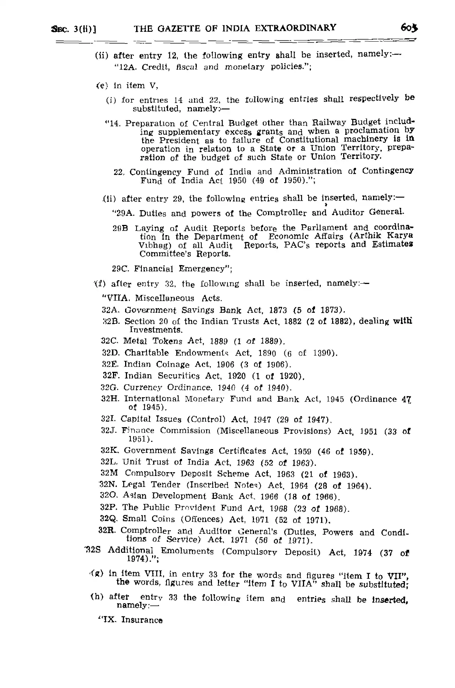
1314151617Schedule 2 › MINISTRY OF FINANCE › DEPARTMENT OF ECONOMIC AFFAIRS › V › entry 14; Schedule 2 › MINISTRY OF FINANCE › DEPARTMENT OF ECONOMIC AFFAIRS › V › entry 22
- 14. Preparation of Central Budget other than Railway Budget including supplementary excess grants and when a proclamation by the President as to fallure of Constitutional machinery is in operation in relation to a State or a Union Territory, preparation of the budget of such State or Union Territory.
- 22. Contingency Fund of India and Administration of Contingency Fund of India Act 1950 (49 of 1950).
applied at schedule 2 › ministry MINISTRY OF FINANCE › department A › group_heading V › entry 14 in the Rules after #114
after Schedule 2 › MINISTRY OF FINANCE › DEPARTMENT OF ECONOMIC AFFAIRS › V › entry 29
- 29A. Duties and powers of the Comptroller and Auditor General. 29B Laying of Audit Reports before the Parliament and coordination in the Department of Economic Affairs (Arthik Karya Vibhag) of all Audit Reports, PAC's reports and Estimates Committee's Reports.
- 29C. Financial Emergency
applied at schedule 2 › ministry MINISTRY OF FINANCE › department A › group_heading V › entry 29A in the Rules after #114
after Schedule 2 › MINISTRY OF FINANCE › DEPARTMENT OF ECONOMIC AFFAIRS › entry 32
- VIIA. Miscellaneous Acts.
- 32A. Government Savings Bank Act, 1873 (5 of 1873).
- 32B. Section 20 of the Indian Trusts Act, 1882 (2 of 1882), dealing with Investments.
- 32C. Metal Tokens Act, 1889 (1 of 1889).
- 32D. Charitable Endowments Act, 1890 (6 of 1390).
- 32E. Indian Coinage Act, 1906 (3 of 1906).
and 12 more
- 32F. Indian Securities Act, 1920 (1 of 1920).
- 32G. Currency Ordinance, 1940 (4 of 1940).
- 32H. International Monetary Fund and Bank Act, 1945 (Ordinance 47 of 1945).
- 32I. Capital Issues (Control) Act, 1947 (29 of 1947).
- 32J. Finance Commission (Miscellaneous Provisions) Act, 1951 (33 of 1951).
- 32K. Government Savings Certificates Act, 1959 (46 of 1959).
- 32L. Unit Trust of India Act, 1963 (52 of 1963). 32M Compulsory Deposit Scheme Act, 1963 (21 of 1963).
- 32N. Legal Tender (Inscribed Notes) Act, 1964 (28 of 1964).
- 320. Asian Development Bank Act, 1966 (18 of 1966).
- 32P. The Public Provident Fund Act, 1968 (23 of 1968).
- 32Q. Small Coins (Offences) Act, 1971 (52 of 1971).
- 32R. Comptroller and Auditor General's (Dutles, Powers and Conditions of Service) Act, 1971 (50 of 1971). 32S Additional Emoluments (Compulsory Deposit) Act, 1974 (37 of 1974).
applied at schedule 2 › ministry MINISTRY OF FINANCE › department A › group_heading VII › entry 32 in the Rules after #114
Schedule 2 › MINISTRY OF FINANCE › DEPARTMENT OF ECONOMIC AFFAIRS › VIII › entry 33
for “Item I to VII” read “Item I to VIIA”
not applied (the change could not be placed in the Rules as read; see How this document was read)
after Schedule 2 › MINISTRY OF FINANCE › DEPARTMENT OF ECONOMIC AFFAIRS › entry 33
- IX. Insurance
- 34. Policy relating to General Insurance; Administration of the Insurance Act, 1938· Insurance Companies Association Pool; Subsidiaries of the Life Insurance Corporation.
- 35. Policy relating to Life Insurance; Nationalisation of the Life Insurance business; Administration of the Life Insurance Corporation Act, 1956, Life Insurance Tribunal.
- 36. Office of the Controller of Insurance.
- 37. The responsibility of the Central Government relating to matters concerning centrally administered areas in respect of any of the entries from 34 to 36 above.
applied at schedule 2 › ministry MINISTRY OF FINANCE › department A › group_heading VIII › entry 33 in the Rules after #114
read page break
Page 4 of 16
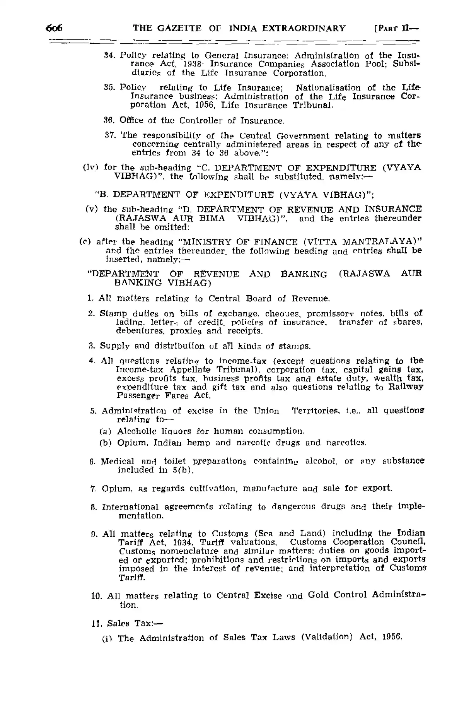
181920Schedule 2 › MINISTRY OF FINANCE › DEPARTMENT OF EXPENDITURE
- B. DEPARTMENT OF EXPENDITURE
applied at schedule 2 › ministry MINISTRY OF FINANCE › department B in the Rules after #114
Schedule 2 › MINISTRY OF FINANCE › DEPARTMENT OF REVENUE AND INSURANCE
applied at schedule 2 › ministry MINISTRY OF FINANCE › department D in the Rules after #114
after Schedule 2 › MINISTRY OF FINANCE
- DEPARTMENT OF REVENUE AND BANKING
- 1. All matters relating to Central Board of Revenue.
- 2. Stamp dutles on bills of exchange, cheques, promissory notes. bills of lading. letters of credit, policies of insurance, transfer of shares debentures, proxies and receipts.
- 3. Supply and distribution of all kinds of stamps.
- 4. All questions relating to income-tax (except questions relating to the Income-tax Appellate Tribunal), corporation tax, capital gains tax excess profits tax, business profits tax and estate duty, wealth tax expenditure tax and gift tax and also questions relating to Railway Passenger Fares Act.
- 5. Administration of excise in the Union Territories, 1.e., all questions relating to
and 29 more
- a. Alcoholic liquors for human consumption.
- b. Opium, Indian hemp and narcotic drugs and narcotics.
- 6. Medical and toilet preparations containing alcohol, or any substance included in 5(b).
- 7. Oplum, as regards cultivation, manufacture and sale for export.
- 8. International agreements relating to dangerous drugs and their implementation.
- 9. All matters relating to Customs (Sea and Land) including the Indian Tariff Act, 1934. Tariff valuations, Customs Cooperation Council Customs nomenclature and similar matters; duties on goods imported or exported; prohibitions and restrictions on imports and exports imposed in the interest of…
- 10. All matters relating to Central Excise and Gold Control Administration.
- 11. Sales Tax:-
- i. The Administration of Sales Tax Laws (Validation) Act, 1956. (11) Levy of tax on sales in the course of inter-state trade or commerceproblems arising out of the administration of the Central Sales Tax Act, 1956.
- ii. Declaration of goods as of special importance in interstate trade or commerce under article 286(3) of the Constitution-laying down of the conditions and restrictions to which the State laws providing for the levy of tax on them would be subjected.
- iv. All questions relating to replacement of sales tax by additional excise duty including administration of the Additional Duties of Excise (Goods of Special Importance) Act, 1957.
- v. All Billy etc., relating to sales tax levy in States coming up for the previous instructions, recommendations or assent of the President.
- vi. Legislative matters concerning sales tax in the Union Territories.
- vii. Problems arising out of the invalidation of sugar-cane cess levies of States including validation of such levies.
- 12. All matters relating to pre-partition duty refund claims on salt
- 13. Subordinate Organisation:-
- a. Income Tax Department
- b. Customs Department
- c. Central Excise Department; and
- d. Narcotics Department
- 14. Preventive detention for reasons connected with the conservation of foreign exchange or prevention of smuggling; persons subjected to such detention.
- 15. All Indian Banks, whether nationalised or not.
- 16. All foreign banks so far as their operations in India are concerned.
- 17. All matters relating to the Reserve Bank of India, except those which remain directly the concern of the Economic Affairs Department (Arthik Karya Vibhag).
- 18. All matters relating to Co-operative Banking which are the concern of this Department.
- 19. All matters relating to long term financial institutions excluding Unit. Trust of India, Life Insurance Corporation and General Insurance Corporation.
- 20. Chit Funds and other non-banking companies accepting deposits.
- 21. Other matters relating to Banking in India.
- 22. Administration of all Statutes, Regulations and other laws connected with above subjects.
applied at schedule 2 › ministry DEPARTMENT OF REVENUE AND BANKING in the Rules after #114
read page break
Page 5 of 16
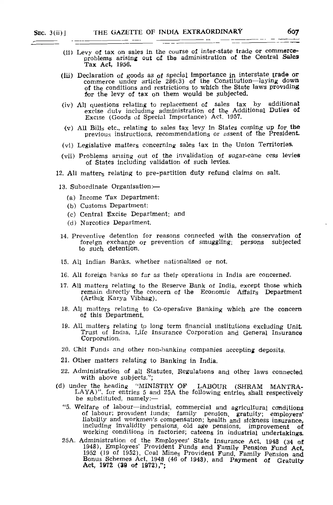
21Schedule 2 › MINISTRY OF LABOUR › entry 5; Schedule 2 › MINISTRY OF LABOUR › entry 25A
- 5. Welfare of labour-industrial, commercial and agricultural conditions of labour; provident funds; family pension, gratuity; employers liability and workmen's compensation; health and sickness insurance including invalidity pensions, old age pensions, improvement of working conditions in factories;…
- 25A. Administration of the Employees' State Insurance Act, 1948 (34 of 1948), Employees' Provident Funds and Family Pension Fund Act 1952 (19 of 1952), Coal Mines Provident Fund, Family Pension and Bonus Schemes Act, 1948 (46 of 1948), and Payment of Gratulty Act, 1972 (39 of 1972)
not applied (the change could not be placed in the Rules as read; see How this document was read)
Page 6 of 16
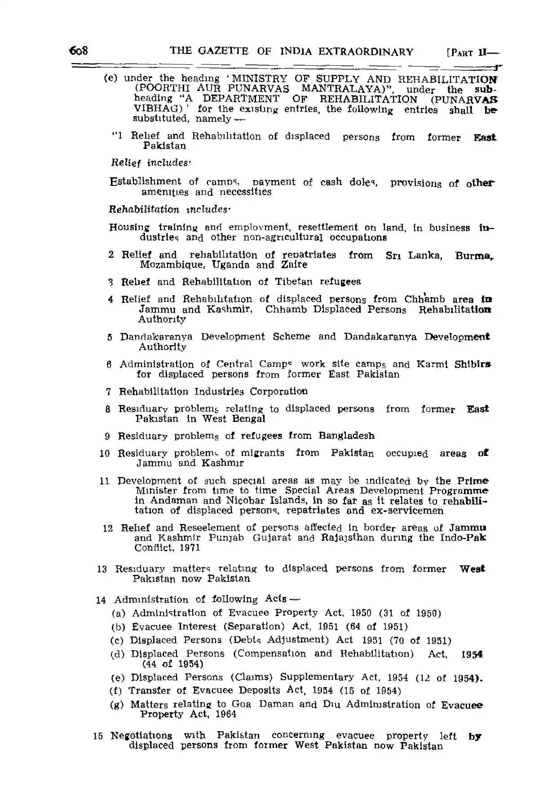
22Schedule 2 › MINISTRY OF SUPPLY AND REHABILITATION › DEPARTMENT OF REHABILITATION
- 1 Relief and Rehabilitation of displaced persons from former East Pakistan Relief includes. Establishment of camps, payment of cash doles, provisions of other amenities and necessities Rehabilitation includes Housing training and employment, resettlement on land, in business industries and other…
- a. Administration of Evacuee Property Act, 1950 (31 of 1950)
- b. Evacuee Interest (Separation) Act, 1951 (64 of 1951)
- c. Displaced Persons (Debt, Adjustment) Act 1951 (70 of 1951)
- d. Displaced Persons (Compensation and Rehabilitation) Act, 1954 (44 of 1954)
- e. Displaced Persons (Claims) Supplementary Act, 1954 (12 of 1954).
and 8 more
- f. Transfer of Evacuee Deposits Act, 1954 (15 of 1954)
- g. Matters relating to Goa Daman and Diu Administration of Evacuee Property Act, 1964 15 Negotiations with Pakistan concerning evacuee property left by displaced persons from former West Pakistan now Pakistan
- 16. Restoration of movable property received from former West Pakistan now Pakistan to the displaced persons from former West Pakistan now Pakistan.
- 17.
- a. Verification and payment of claims of displaced persons from former West Pakistan now Pakistan who were Government servants In the undivided provinces and local bodies in respect of pension provident fund, leave salary and security deposits.
- b. Ad hoc schemes for payment of pension, G.P. Fund, leave Salary and ex-gratia relief to displaced Government servants from former West Pakistan now Pakistan, grant of relief to the contractors in respect of their verified claims; grant of relief to pensioners migrated from former East Pakistan and…
- 18. All Attached or Subordinate Offices or other organisations concerned with any of the subjects specified in this list.
- N. B. Except where specifled, the programmes of relief and rehabilltation are executed and administered through the State Governments.
applied at schedule 2 › ministry MINISTRY OF SUPPLY AND REHABILITATION › department A in the Rules after #114
read page break
Page 7 of 16
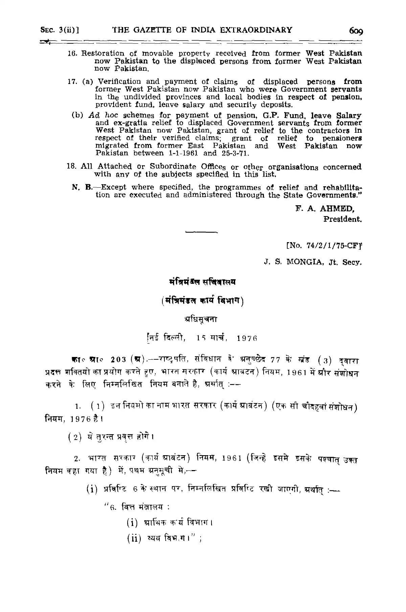
Page 8 of 16
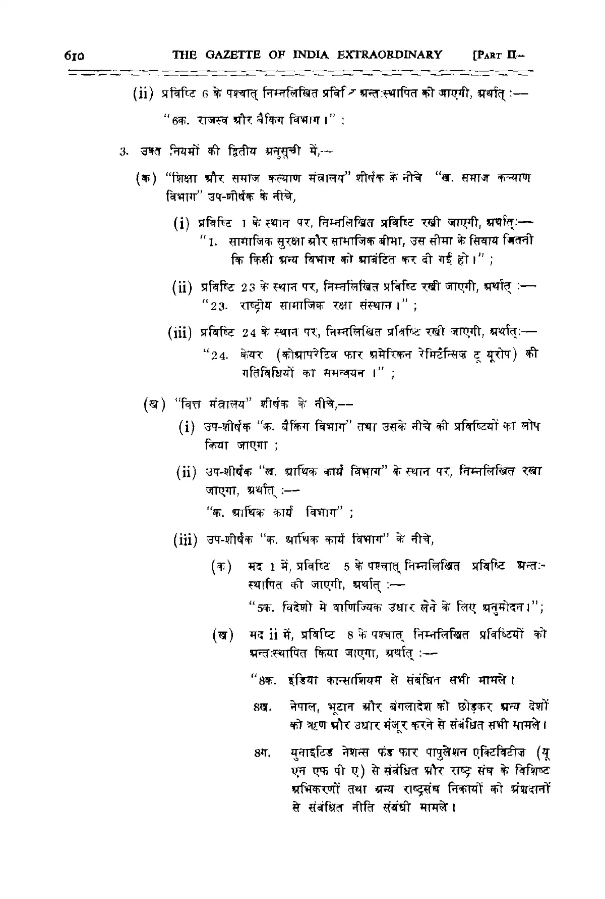
Page 9 of 16
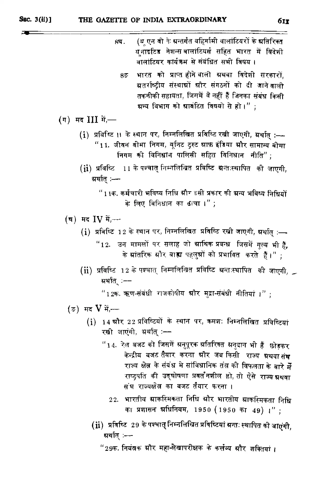
Page 10 of 16
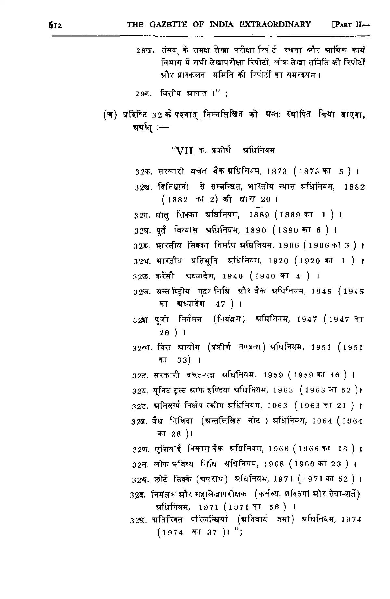
Page 11 of 16
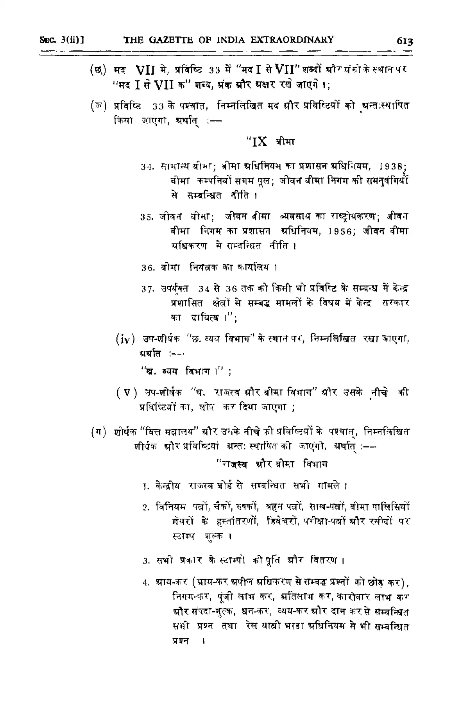
Page 12 of 16
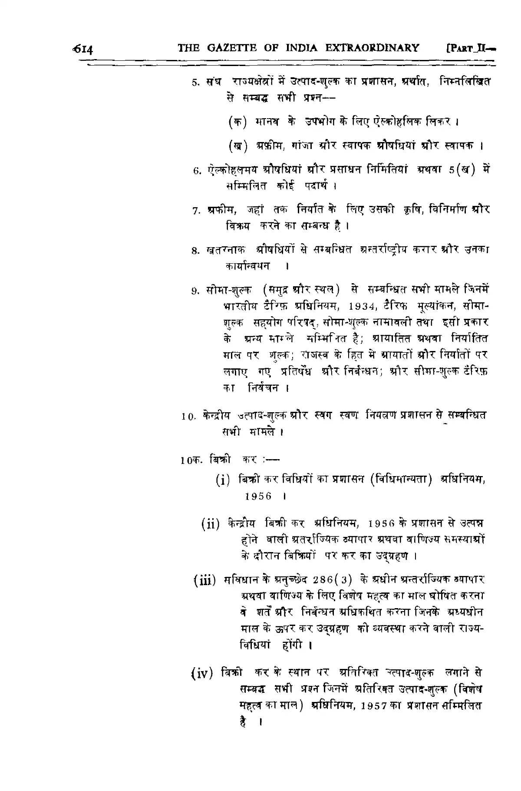
Page 13 of 16
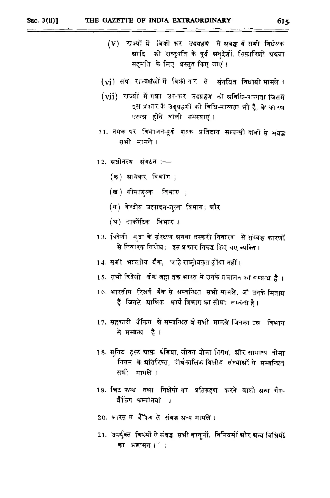
Page 14 of 16
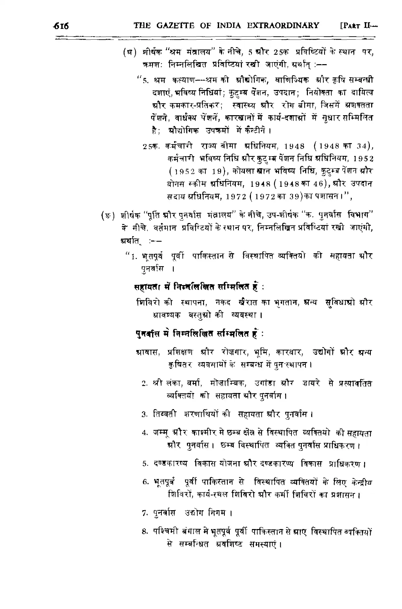
Page 15 of 16
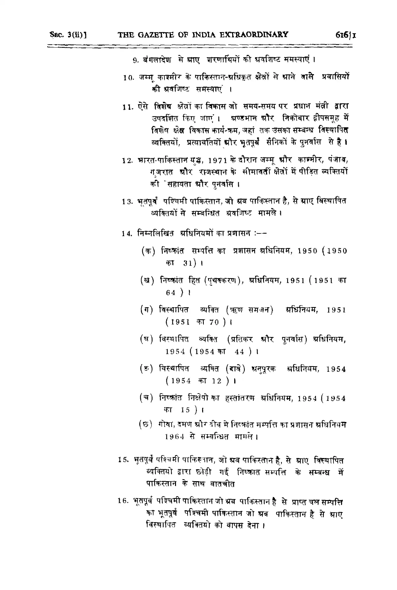
Page 16 of 16
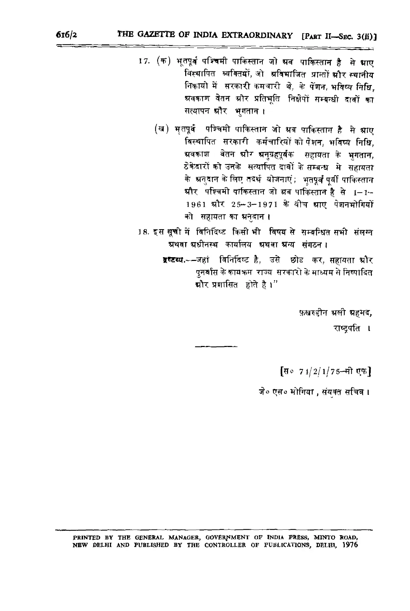
How this document was read
Edits to the reading
| Date | By | Edit | Before → after |
|---|---|---|---|
| 12 November 2026 | claude | word corrected |
Known issues
| Change | Issue | Known as |
|---|---|---|
| 16 | change 16: the words to substitute are not in schedule 2 › ministry MINISTRY OF FINANCE › department A › group_heading VIII › entry 33 | Words that differ |
| 21 | change 21: no entry 25A under schedule 2 › ministry MINISTRY OF LABOUR | Entries not in the state |
From the Government of India (Allocation of Business) Rules, 1961 and their amendments, as published by the Cabinet Secretariat (cabsec.gov.in), read by orgpedia. The readings of the older scanned gazettes have known gaps.